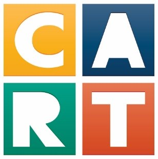

Hi, my name is
Jacob Rodriguez
About Me
I am a...
- High School Junior
- Track & Field Athlete
- Web Applications Student
Some things I enjoy:
- Playing rhythm games, single-player games, and mobile games
- Running across the city
- Going out with my family

CART year in Review
\
If I were to describe my experience at CART, it could probably be summarized into 3 phases:
- Adapting
- Learning
- Practicing
Adapting
CART is a unqique experience due to the fact that instead of moving clasrooms like a normal school, you instead stay in the same "lab" for the whole duration. This led to us having more time to learn valuables info on programming, which is a very big reason as to why I was able to learn so much.
However, being a new kind of environment meant that I had to get used to it. I had to wake up earlier than usual as a result of the start time, and the content was harder than the classes I was used to at my old high school.
Learning
It took me around a month to get used to CART's unique style. Hoever, once I started to get the hang of it I learned a lot more on the basics of programming, such as HTML and CSS. By the end of the semester, I had a full grasp on how HTML is structured and how to use important CSS elements like flex and grids.
Practicing
Although we practiced HTML and CSS, the relatively simple logic of it helped us learn it through practice. However, once the second semester rolled around we started learning JavaScript, which could help us do so much more with our websites, at the cost of it being very difficult to master
However, the mastering came from lots of practice. We had multiple different projects and excercises where we were utulized Javascript to do things like calculate a budget or make a to-do list. This step is the one that I would say I'm currently on, as the practicing of JavaScript never really feels like it's ever done.